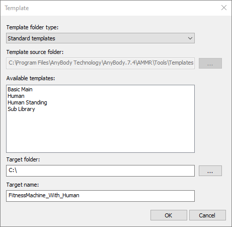
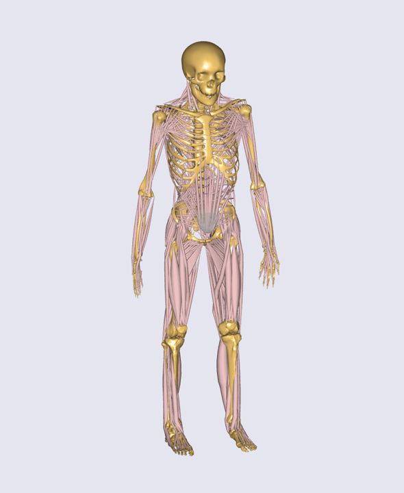
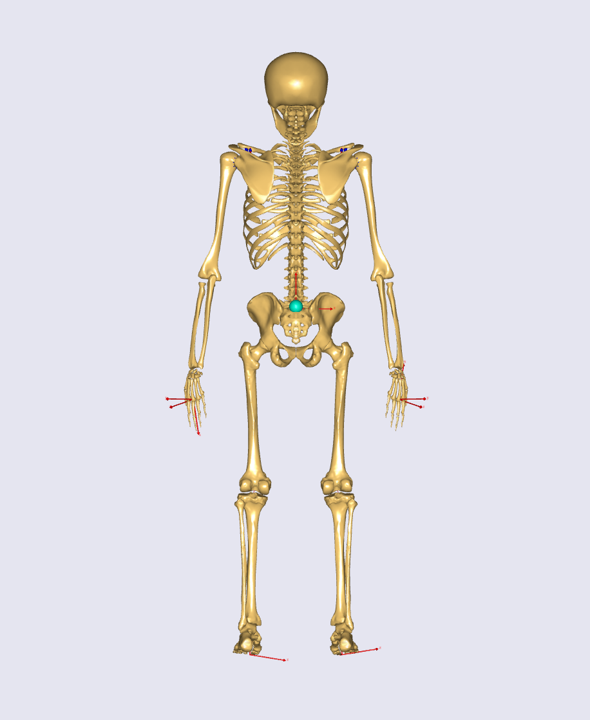
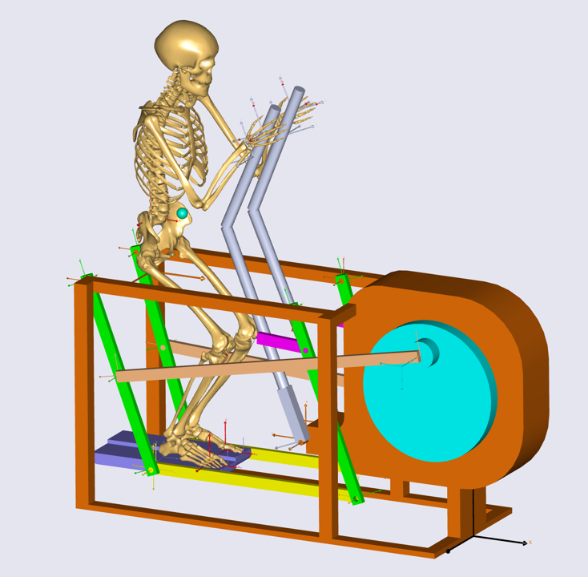
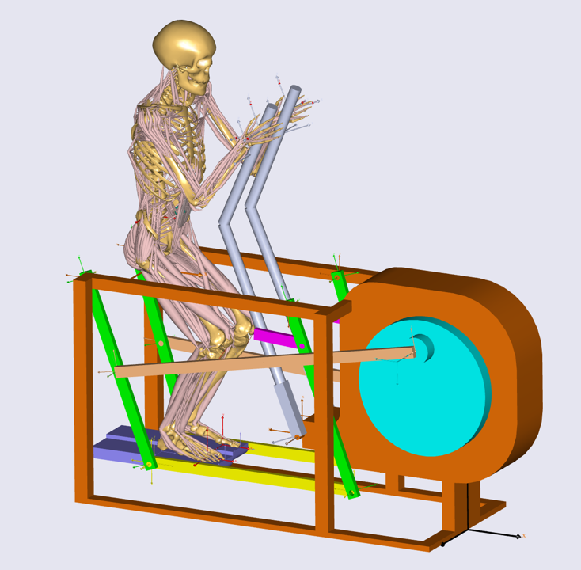

Creating human-machine integrated analysis model¶
If you did not finish the previous lesson, please download the
FitnessMachine_Mate_Config3.zip file in order to get the correct set of files for starting this lesson.
In this lesson, we will create a model with a human body using a template; we will add the fitness machine created in the previous lesson and then connect the human body to the fitness machine.
Create a human model from a main file template¶
First, let us start a new human model from a template which we will call ‘FitnessMachine_With_Human’ using the main file template menu from the AnyBody GUI.

After we create the model, we should make sure that the definitions in the libdef.any files are set to use the right body model as explained in the tutorial ‘Getting Started with AMMR’. When we load this model, we can see that we have a standing full human body model.

To keep things simple, start by switching off the muscles by setting the
BM statement for the muscle definitions of arms, legs and trunk in our
new created file ‘FitnessMachine_With_Human.main.any’ to
_MUSCLES_NONE_:
#include "../libdef.any"
Main = {
//If you want to use your own draw settings, please outcomment the next line
//#path BM_DRAWSETTINGS_FILE "Model\DrawSettings.any"
// Using your own Mannequin.any file in the Model folder of your model
#path BM_MANNEQUIN_FILE "Model\Mannequin.any"
// Switch off all muscles of the body model
#define BM_LEG_MUSCLES_BOTH _MUSCLES_NONE_
#define BM_TRUNK_MUSCLES _MUSCLES_NONE_
#define BM_ARM_MUSCLES_BOTH _MUSCLES_NONE_
// Include default human model
#include "<ANYBODY_PATH_BODY>\HumanModel.any"
...
Next, we will equip the model with a center of mass (CoM) of the human model.
For this we must add an extra virtual segment that follows the CoM. We will make
the virtual segment massless, since it is not a real segment. We use the CoM
measure (AnyKinCoM) to drive this dummy segment. The code for doing this is
prepared in CoM_View.any. This kind of CoM
segment can be used not only for visualization, but also for kinematic
constraints of the human model.
Furthermore, we will extend the human model with reference frames
attached to the human segments for interfacing with the machine. This
will of course be done at the hands and feet, but also at the pelvis,
which we may want to control. We add nodes (AnyRefNode) at the palms of
the hands, the toes of the feet and at the center of the pelvis. Please
see HumanRefNodes.any.
Let us edit the main file in order to include these additional AnyScript files like this:
AnyFolder Model = {
// A link to the human model
AnyFolder &HumanModel=.HumanModel.BodyModelWithDefaultDrivers;
// Definition for CoM(Center of Mass) of Human Model
#include "Model\CoM_View.any"
// Definition of additional AnyRefNode object in the human model
#include "Model\HumanRefNodes.any"
...
};
If you reload the model, then you will see the dummy CoM segment and some AnyRefNode objects like this:

Insert the fitness machine into the model¶
We are now ready to include the fitness machine. The first step is to copy the fitness machine we created in the previous lesson to the Model subfolder of our model. Next, we will add the fitness machine to the model by including the ‘FitnessMachine.any’ file again. You should put all the files (including FitnessMachine.any file) from the previous lesson into the Input subfolder of your model which is created by the template. In addition, we will modify the predefined AnyBodyStudy object like we did in Lesson 2 to prepare for an actual dynamic analysis.
AnyFolder Model = {
// A link to the human model
AnyFolder &HumanModel=.HumanModel.BodyModelWithDefaultDrivers;
// Definition for CoM(Center of Mass) of Human Model
#include "Model\CoM_View.any"
// Definition of additional AnyRefNode object in the human model
#include "Model\HumanRefNodes.any"
// AnyScript file for the fitness machine from SolidWorks
#include "Input\FitnessMachine.any"
// Environment files are used to include objects surrounding human
#include "Model\Environment.any"
AnyFolder ModelEnvironmentConnection = {
//'JointsAndDrivers.any' file can include all kinematic constraints such as joints and drivers
#include "Model\JointsAndDrivers.any"
// Additional reactions which are required to run the inverse dynamics analysis
#include "Model\Reactions.any"
};
};
AnyBodyStudy Study =
{
AnyFolder& Model = .Model;
Gravity = {0, -9.81, 0};
tStart = 0;
tEnd = 1;
nStep = 61;
// these settings are needed for adding drivers without removing the default set
Kinematics.SolverType = KinSolOverDeterminate;
InitialConditions.SolverType = Kinematics.SolverType ;
};
Similar to the previous lesson, we will add a driver for the fitness machine to
make the model kinematically determinate. To do this, we can use the
MachineOperation.any file which
defines the drivers we created in Lesson 2.
AnyFolder MachineOperation =
{
AnyVar T_period = 1.0;
AnyVar angular_vel = 360.0 / T_period;
AnyVar phase_offset = 0;
AnyKinEqSimpleDriver Rotation_Drv =
{
AnyRevoluteJoint& jnt = Main.Model.FitnessMachine.Mates.Hinge_MainCylinder;
DriverPos = {.phase_offset};
DriverVel = pi/180*{-.angular_vel};
Reaction.Type = {Off};
};
AnyForce ResistanceTorque =
{
AnyVar coeff_term = 85;
AnyVar const_term = coeff_term;
AnyRevoluteJoint& jnt = Main.Model.FitnessMachine.Mates.Hinge_MainCylinder;
F = {coeff_term * sin(jnt.Pos[0]*2+pi/2) + const_term};
};
};
We will copy this file to the Model subfolder our model and include it into our model.
AnyFolder Model = {
// A link to the human model
AnyFolder &HumanModel=.HumanModel.BodyModelWithDefaultDrivers;
// Definition for CoM(Center of Mass) of Human Model
#include "Model\CoM_View.any"
// Definition of additional AnyRefNode object in the human model
#include " Model\HumanRefNodes.any"
// AnyScript file for the fitness machine from SolidWorks
#include "Input\FitnessMachine.any"
AnyFolder ModelEnvironmentConnection = {
//'JointsAndDrivers.any' file can include all kinematic constraints such as joints and drivers
#include "Model\JointsAndDrivers.any"
// Additional reactions which are required to run the inverse dynamics analysis
#include "Model\Reactions.any"
// Include drivers of the fitness machine
#include "Model\MachineOperation.any"
};
};
Notice that the drivers have been placed in a separate folder called ‘ ModelEnvironmentConnection’. This is a typical setup used in most models.
When we now load the model, we will see that our human is sitting on the
machine, but because he was not designed to sit on the machine, we need
to change his position so it is relative to the fitness machine. We do
this by changing the mannequin of the model. Since we do not want to
spend too much time positioning the human model in this tutorial, we
will use the file Mannequin.any (click to download). Copy the file to the Model subfolder
to overwrite it.
When we now load the model and run the Kinematics, we will see that out human is located on the fitness machine and the machine is moving. Now, the only thing missing is to connect our body model to the machine.
Connecting human model and fitness machine¶
The first thing we have to do to connect our human with the machine is to undefine the default drivers of the human model. We do this by setting a BM statement in the Main folder:
#include "../libdef.any"
Main = {
//If you want to use your own draw settings, please outcomment the next line
//#path BM_DRAWSETTINGS_FILE "Model\DrawSettings.any"
// Using your own Mannequin.any file in the Model folder of your model
#path BM_MANNEQUIN_FILE "Model\Mannequin.any"
// Switch off all muscles of the body model
#define BM_LEG_MUSCLES_BOTH _MUSCLES_NONE_
#define BM_TRUNK_MUSCLES _MUSCLES_NONE_
#define BM_ARM_MUSCLES_BOTH _MUSCLES_NONE_
// Switch of the default drivers
#define BM_MANNEQUIN_DRIVER_DEFAULT OFF
// Include default human model
#include "<ANYBODY_PATH_BODY>\HumanModel.any"
...
When you load this model, you will see the following warning message:
Model Warning: Study 'Main.Study' contains too few kinematic constraints to be kinematically determinate.
If you look at the Object Description of your AnyBodyStudy object, you can find the information about the number of DOFs and constraints of the model.
Total number of rigid-body d.o.f.: 378
Total number of constraints:
Joints: 224
Drivers: 76
Other: 34
Total: 334
This means that we are missing 44 constraints. These were the degrees of freedom released when we removed the default drivers. This implies that the AnyBody human model contains 44 degrees of freedom. So we have to define 44 other constraints for the human model.
The AnyExp4SOLIDWORKS translator searches for user-defined reference entities with a certain prefix. You select the prefix in the options dialog for the translator. We will use some of these reference systems for interfacing. In this model you can find this information in the ‘FitnessMachine.any’ file or simply in the Model Tree of the loaded model.
AnyFolder FitnessMachine =
{
AnyKinEqType _ANY_CTYPE_ = Hard;
AnyFolder _ANY_INTERFACE_ =
{
//LIST OF USER-DEFINED REFERENCE COORDINATE SYSTEMS
AnyRefFrame& Pedal___1____ANY_TOE1 = .Pedal___1.ANY_TOE1;
AnyRefFrame& Pedal___1____ANY_CENTER = .Pedal___1.ANY_CENTER;
AnyRefFrame& Pedal___1____ANY_TOE2 = .Pedal___1.ANY_TOE2;
AnyRefFrame& Pedal___2____ANY_TOE1 = .Pedal___2.ANY_TOE1;
AnyRefFrame& Pedal___2____ANY_CENTER = .Pedal___2.ANY_CENTER;
AnyRefFrame& Pedal___2____ANY_TOE2 = .Pedal___2.ANY_TOE2;
AnyRefFrame& ANY_LEFT_HAND1 = .Handle___1.ANY_LEFT_HAND1;
AnyRefFrame& ANY_LEFT_HAND2 = .Handle___1.ANY_LEFT_HAND2;
AnyRefFrame& ANY_RIGHT_HAND1 = .Handle___2.ANY_RIGHT_HAND1;
AnyRefFrame& ANY_RIGHT_HAND2 = .Handle___2.ANY_RIGHT_HAND2;
AnyRefFrame& ANY_PELVIS = .MainBase___1.ANY_PELVIS;
//LIST OF USER-DEFINED REFERENCE COORDINATE SYSTEMS
};
Now we will create the missing 44 constraints to govern the motion.
We shall prepare this as a separate AnyScript file, which we will name
‘JointsAndDrivers.any’. You can download this file here:
JointsAndDrivers.any. And put it into
the Model subfolder of your model folder to overwrite. Starting from the bottom
of the human (the top of the file) the constraints applied are as follows:
Feet are fixed to the pedals, though with a unilateral force normal to the pedal, since the feet are not “glued” to the pedal.
Hands are fixed to the handles.
Pelvis thorax rotation is driven to fixed value.
Hip abduction is fixed at its initial condition value.
The sterno-clavicular joint angles are fixed at their initial condition values (however, if the shoulder rhythm is used, this driver is excluded).
The glenohumeral abduction is fixed at its initial condition value.
In this JointAndDrivers.any file, you will see that only the connections at the hands and feet have reaction types set to ‘On’. The other constraints are just for kinematics, i.e. the voluntary motion, which is not associated with any reaction forces; this motion is kinetically produced by the muscles of the human.
Finally, we should remove the supporting reaction forces and moments at the hip segments because this model now has the enough supporting forces and moments at hands and feet. You can simply just comment out the “Reactions.any” file as follows:
...
AnyFolder ModelEnvironmentConnection = {
//'JointsAndDrivers.any' file can include all kinematic constraints such as joints and drivers
#include "Model\JointsAndDrivers.any"
// Additional reactions which are required to run the inverse dynamics analysis
//#include "Model\Reactions.any"
// Include drivers of the fitness machine
#include "Model\MachineOperation.any"
};
...
Now you can load the model, and if you run the “InitialConditions” or the “Kinematics” operation of the AnyBodyStudy object, you will see that all drivers and constraints are ready for analysis and that the motion appears reasonable.

The final task is to switch on the muscles of the human body again by commenting out the body model statements that we introduced in the beginning of this lesson.
#include "../libdef.any"
Main = {
//If you want to use your own draw settings, please outcomment the next line
//#path BM_DRAWSETTINGS_FILE "Model\DrawSettings.any"
// Using your own Mannequin.any file in the Model folder of your model
#path BM_MANNEQUIN_FILE "Model\Mannequin.any"
// Switch off all muscles of the body model
//#define BM_LEG_MUSCLES_BOTH _MUSCLES_NONE_
//#define BM_TRUNK_MUSCLES _MUSCLES_NONE_
//#define BM_ARM_MUSCLES_BOTH _MUSCLES_NONE_
// Switch of the default drivers
#define BM_MANNEQUIN_DRIVER_DEFAULT OFF
// Include default human model
#include "<ANYBODY_PATH_BODY>\HumanModel.any"
...
Now you are ready to run the “InverseDynamics” operation, which should now run successfully.

The final version of this model file can be downloaded here:
‘FitnessMachine_With_Human.zip’.
 Fix it your self
Fix it your self